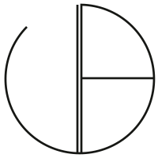
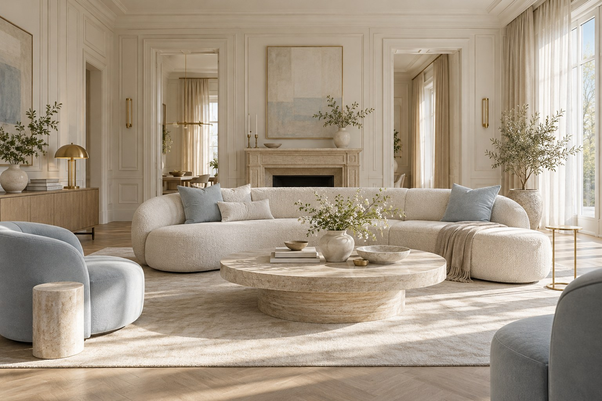
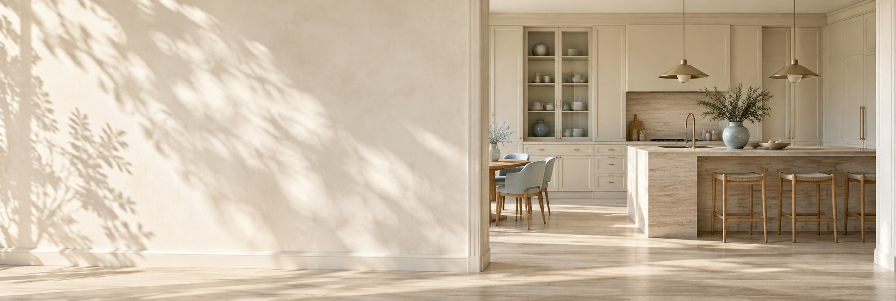
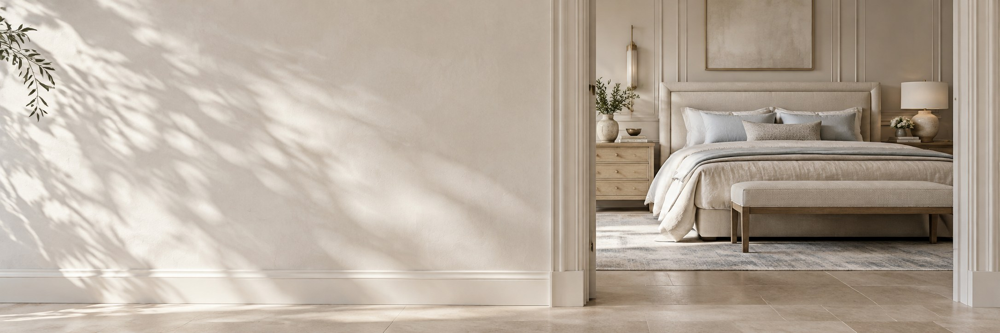
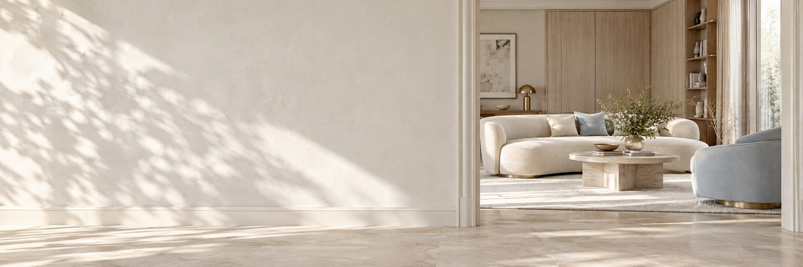
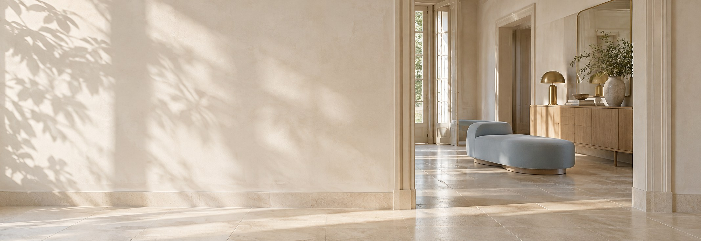

Inwentaryzacja
Pomiary przestrzeni i rozmowa o Twoich potrzebach. Od tego zaczyna się projekt.


Justyna
Bochniak
ARCHITEKTURA WNĘTRZ
Nazywam się Justyna Bochniak i projektuję wnętrza, w których estetyka spotyka się z codziennością.
Od 15 lat tworzę projekty domów, apartamentów, rezydencji i przestrzeni biznesowych. Lubię wnętrza spokojne, dopracowane i przemyślane w detalu, ale zawsze zaczynam od funkcji.
Bo dobry projekt nie powstaje tylko z pięknych inspiracji. Powstaje z rozmowy, obserwacji i decyzji, które później naprawdę ułatwiają życie.
A jeśli planujesz swoją przestrzeń, napisz. Chętnie porozmawiam.


Od pierwszej koncepcji po realizację.
Pomiary przestrzeni i rozmowa o Twoich potrzebach. Od tego zaczyna się projekt.
Układ funkcjonalny, moodboardy i kierunek estetyczny dopasowany do Twojej codzienności.
Fotorealistyczny obraz wnętrza, który ułatwia decyzje o jego ostatecznej formie.
Dobór mebli, wykończeń i wyposażenia z uwzględnieniem ustalonego budżetu.
Szczegółowe rysunki techniczne dla wykonawców i projekty mebli na wymiar.
Dodatkowe wsparcie podczas realizacji i czuwanie nad zgodnością prac z projektem.

Moje wnętrza na łamach „Werandy”.

Bądź na bieżąco.